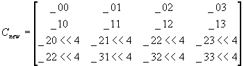

#include <nitro/gx/g3_util.h>
void G3_LoadTexMtxTexCoord(const MtxFx44 * mtx);
// Below are APIs for creating the display list (command list):
void G3B_LoadTexMtxTexCoord(GXDLInfo* info, const MtxFx44 * mtx);
void G3C_LoadTexMtxTexCoord(GXDLInfo* info, const MtxFx44 * mtx);
void G3BS_LoadTexMtxTexCoord(GXDLInfo* info, const MtxFx44 * mtx);
void G3CS_LoadTexMtxTexCoord(GXDLInfo* info, const MtxFx44 * mtx);| mtx | Pointer to matrix to load in the texture matrix |
None.
This function sets the matrix mode to Texture mode and sets the texture matrix. At this time, corrections are performed that are necessary when set in TexCoord source. The result is a new current texture matrix Cnew, shown below.

G3*_LoadTexMtxEnv, G3*_MtxMode
01/19/2004 Initial version
CONFIDENTIAL